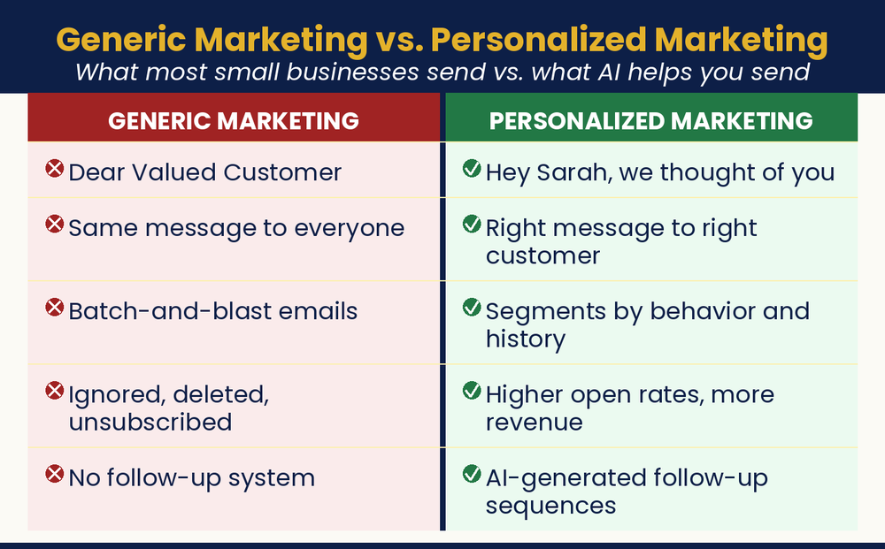

Stop Broadcasting. Start Connecting.
How do I make my marketing feel personal without spending all day writing it?

Generic marketing gets ignored. People pay attention when a message feels made just for them. That personal touch used to need a big team and a big budget. Now it takes AI and about thirty minutes. First, build a clear picture of your best customer. Then let AI write to that one person. Personal emails get opened more. Personal offers sell about twice as well. Build that picture once. It makes every email, post, and reply better from then on.
1. Build Your Customer Persona — run once, save it, reuse forever
I own a [type of business] in [location]. My best customers tend to be [describe who buys from you most and who spends the most]. Help me build a detailed customer persona, including their likely age range, what they care about most in life, the biggest frustration my business helps solve, what they read or watch, how they prefer to communicate, and what would make them choose me over a competitor. Give the persona a name and make them feel like a real, specific person.
2. Write With the Persona — see the difference a persona makes
Write a promotional email for my [business + location]. My ideal customer is [persona name + a sentence about them]. The email is about [offer/news]. Tone should be [warm, personal, a little playful]. Subject line and body, under 150 words.
3. Rewrite for Three Segments — one message, tailored by relationship stage
Rewrite this message three ways: once for a brand-new customer who has never bought from me, once for a regular who buys frequently, and once for a lapsed customer who hasn’t purchased in six months. Make each version feel appropriate for that specific relationship stage. [paste your message]
4. Build Your Brand Voice Guide — capture your voice once, reuse everywhere
Analyze the voice and tone of the following writing samples from my business. Describe my brand voice in specific, concrete terms, not just ‘friendly,’ but what kind of friendly; not just ‘professional,’ but in what way. Create a brief voice guide I can paste into AI prompts to help it match my tone. [paste 3–4 samples]
5. Apply Your Brand Voice — paste at the top of any prompt where voice matters
Please write in the following brand voice: [paste guide].
6. Persona Lenses — point AI at the right audience
Write this for [persona name]. / Write this for someone who’s never heard of us. / Write this for our top 10% of spenders.
7. Find Their Buying Questions — Pro Tip; then answer them in your content
What are the five questions my [customer type] is asking before they decide to buy from a business like mine?
Build your primary customer persona today using the prompt above. Save it somewhere accessible. Then take one piece of marketing you’re planning to send this week and write two versions: one without the persona in mind, one with it. Read them side by side. You’ll feel the difference immediately. Send the better one.
Read the full chapter in AI Jiu-Jitsu → AJJbook.com
Prefer to have it set up for you? BreakThru Growth offers AI coaching and done-for-you setup for small businesses → BreakThruGrowth.com